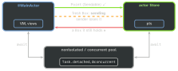

swift · folio
In one line: In the Swift 6 language mode data-race safety is a
compile-time guarantee: all mutable state belongs to one
isolation domain (an actor, a global actor like @MainActor,
or nonisolated); a value crosses domains only if it is
Sendable or provably never used again by the sender
(region isolation / sending). Swift 5 warnings become errors.
Download PDF Print view LaTeX source

How it works
- Domains. Each
actorinstance = one domain (serial executor). A global actor (@MainActor, or@globalActor actor DB { static let shared = DB() }) = one domain shared by everything marked with it.nonisolated= no domain: sees onlylet/Sendable state. Crossing =await. Sendable= marker protocol, safe to share. Implicit for non-public structs/enums with Sendable members;publicones must declare it. Afinal classwith onlyletSendable stored properties conforms (checked). Actors and@MainActorclasses are Sendable for free.@unchecked Sendable= “trust me, I lock”.@Sendableclosure may run concurrently: Sendable captures only, no capturedvar. (addTask,Task.detached.)- Region-based isolation (SE-0414, Swift 6.0): a non-Sendable value in a disconnected region (fresh, not reachable from any actor’s state) may be sent if the sender never uses it again.
sending(SE-0430) spells it in a signature:f(_ x: sending Box),-> sending T. - Globals (SE-0412): a global/
static varmust be global-actor isolated, or a Sendablelet. Hatch:nonisolated(unsafe). @preconcurrency import Msilences Sendable errors for types of a not-yet-migrated module.- Swift 6.2 / Xcode 26 “Approachable Concurrency”: default isolation
MainActor(SE-0466); nonisolatedasyncruns on the caller’s actor (SE-0461),@concurrentopts out; isolated conformanceextension V: @MainActor P(SE-0470).
Example
final class Box { var n = 0 } // not Sendable
struct Point: Sendable { var x, y: Int } // value: fine
actor Store { var pts: [Point] = []
func add(_ p: Point) { pts.append(p) }
func take(_ b: sending Box) { b.n += 1 } }
@MainActor final class VM { // UI domain
let store = Store()
func run() async {
await store.add(Point(x: 1, y: 2)) // Sendable crosses
let b = Box() // disconnected region
await store.take(b) // OK: sent away...
// b.n = 5 error: 'b' used after being sent
}
nonisolated func id() -> String { "vm" } // no hop
}Migration strategy
- Swift 5 mode + complete checking as warnings:
SWIFT_STRICT_CONCURRENCY = complete(SwiftPM.enableUpcomingFeature("StrictConcurrency")). - One module at a time: UI types
@MainActor, models as Sendable values, deps behind@preconcurrency import. - Flip it:
SWIFT_VERSION = 6/swiftLanguageModes: [.v6]; modules in 5 and 6 mode link together. Then shrink every@unchecked/(unsafe)/@preconcurrency— each is debt.
Domains and what may cross

Inside a domain: synchronous. Across:
await + the value is Sendable or a disconnected
region. Non-Sendable state still reachable from its home (red) never leaves.
Common errors → fix
| Compiler says (abridged) | Fix, best first |
|---|---|
| Capture of ’x’ with non-sendable type ’X’ in a ‘@Sendable’ closure | make X a Sendable value; capture a copy [v = x.v]; isolate both to one actor |
| [1pt] Sending ’x’ risks causing data races | don’t touch x after the send; make it Sendable; param sending |
| [1pt] Main actor-isolated … can not be referenced from a nonisolated context | mark the caller @MainActor; or make it async + await |
| [1pt] Static property ’shared’ is not concurrency-safe because it is nonisolated global shared mutable state | static let + Sendable type; @MainActor static var; last resort nonisolated(unsafe) |
| [1pt] Stored property ’n’ of ’Sendable’-conforming class ’C’ is mutable | let; make it an actor; or Mutex/lock + @unchecked Sendable |
| [1pt] Main actor-isolated method cannot satisfy nonisolated protocol requirement | nonisolated + MainActor.assumeIsolated; @MainActor protocol; 6.2 isolated conformance |
Traps
- Swift 6 compiler ≠ Swift 6 mode: an old project on the 6.x compiler still builds in Swift 5 mode; mode is per module.
@unchecked Sendableover an unlockedvarmutes the checker and keeps the race.Task.detachedin an actor is not isolated to it;Task {}inherits the actor.- Actors stop data races, not logic races — state can change across any
await(reentrancy). - A
public structis not implicitly Sendable.
Remember
Every value has one home. It may travel if it is the 3 S: Sendable, Sent (disconnected, never touched again), or Synchronised by you (@unchecked, at your own risk).